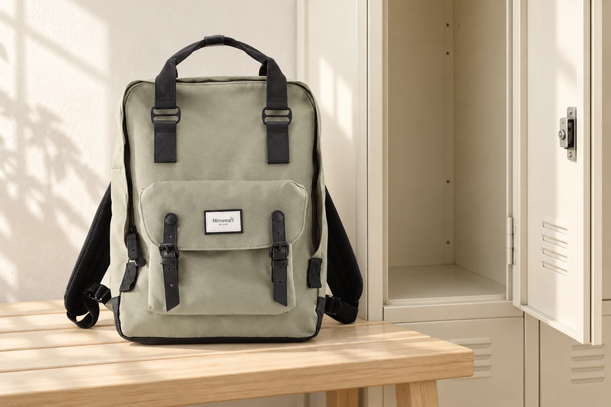

사물함 크기는 문이 닫히는 자리까지

사물함에 가방을 넣었는데 문이 닫히지 않을 때에는 안쪽이 작다는 생각이 먼저 듭니다. 실제로는 앞주머니나 손잡이가 문 안쪽의 부품과 만날 수 있고, 안에 놓을 공간과 꺼낼 공간이 다를 수도 있습니다. 한 번 넣는 데 성공한 모습만으로 매일 사용할 자리가 정해지는 것은 아닙니다. 가방을 넣고 문을 닫고 다시 꺼내는 세 동작을 이어서 생각해 봅니다.
안쪽 공간으로 들어가는 입구
사물함을 측정할 수 있는 곳이라면 안쪽의 가로·세로·깊이에 더해 실제 입구를 봅니다. 문틀과 선반이 있으면 어느 부분이 통과할 수 있는 공간인지 달라집니다. 안쪽 바닥에 빈자리가 있어도 들어가는 길이 좁을 수 있습니다. 개인 시설이 아닌 곳에서는 이용 안내를 따르고 부품을 분리하거나 선반 위치를 임의로 바꾸지 않습니다. 허용된 상태에서 사용하는 공간을 기준으로 확인합니다.
가방은 평소 짐을 넣은 모습으로 살펴봅니다. 빈 가방의 납작한 형태로 맞춘 다음 짐을 채우면 앞쪽이나 옆쪽이 달라질 수 있습니다. 밖으로 나온 물병이나 끈, 손잡이가 있다면 전체 형태 안에서 봅니다. 크기를 표시한 제품 숫자와 실제 사용 중인 모양도 구분합니다. 그날 가져갈 구성으로 사물함에 넣을 계획이라면 그 구성에서 정상적으로 놓이고 꺼내지는지를 확인하면 됩니다.
가방 바닥을 선반에 받칠 자리를 먼저 정합니다. 한 모서리만 걸친 상태로 문을 닫으려고 하지 않고 본체가 놓이는 모습을 봅니다. 입구를 통과할 때 돌려야 한다면 안쪽에서 다시 원래 방향으로 놓을 공간이 있는지도 확인합니다. 넣는 길만 생각하면 꺼낼 때 잡을 면을 찾기 어려울 수 있습니다. 실제 사용하는 손잡이나 본체를 받치는 동작이 가능한지도 함께 살펴볼 수 있습니다.
문 안쪽 부품이 움직이는 자리
문을 열어 경첩과 잠금장치가 어디에 있는지 봅니다. 문 안쪽의 돌출부가 가방 앞면으로 들어오는 위치도 살펴봅니다. 가방을 놓은 뒤 문을 천천히 가까이 가져가다 닿는 느낌이 들면 멈춥니다. 문으로 가방을 눌러 형태를 바꾸거나 잠금장치가 맞도록 더 세게 돌리는 방식으로 공간을 만드는 일은 피합니다. 닫히기 전에 무엇이 닿았는지 볼 수 있어야 배치를 조정할 수 있습니다.
문과 만나는 것이 작은 파우치인지 본체 전체인지 구별합니다. 하나를 꺼내 위치를 바꿨을 때 달라지는지 볼 수 있습니다. 공간이 부족한데 다른 물건을 위에서 눌러 넣기보다 그날 보관할 묶음을 나누거나 다른 안내된 자리를 고르는 편이 낫습니다. 사물함 안쪽의 청결과 물기도 함께 봅니다. 내용물을 옮길 수 있어도 젖은 면에 그대로 놓을 장소로 결정하지 않습니다.
Himawari No.1010을 사물함에 보관할 계획이라면 선택한 시설과 평소 짐을 기준으로 비교합니다. 가방을 넣은 뒤 어깨끈이 어디에 남는지와 문을 다시 열었을 때 꺼낼 면부터 확인합니다. 사진 속 사물함의 모습보다 자기 시설에서 반복할 동작이 선택의 기준이 됩니다. 출입카드처럼 보관 전에 꺼내둘 물건도 같은 준비 안에서 정할 수 있습니다.

끈은 문틈을 지나가지 않는 위치로
어깨끈과 남은 끈 끝은 자연스럽게 안쪽으로 모읍니다. 문과 경첩 사이에 들어가는 부분이 없는지, 지퍼 장식이 문 밖으로 나오는지 봅니다. 부품을 아무 고리에 걸어 매달기보다 가방이 본래 안내된 형태로 선반에 놓이는 위치를 고릅니다. 끈을 아주 작은 공간에 구겨 넣으면 다음에 꺼낼 때 엉킬 수 있으므로 손으로 분리할 수 있는 상태로 정리합니다.
다시 꺼낼 때에는 문을 충분히 열고 본체를 받쳐 옮길 수 있는지 봅니다. 끈만 당겨 다른 물건 사이에서 빼내기보다 잡을 위치를 확인합니다. 잠금장치나 선반 모서리에 걸린 소품이 있으면 먼저 그 부분을 정리합니다. 사물함 안에 공용 물건이 함께 있다면 자신의 가방을 꺼내는 동작에서 다른 물건이 움직이지 않는지도 살펴봅니다. 넣을 때 남긴 여유가 꺼낼 때에도 필요한 공간입니다.
업무 중 필요한 휴대전화나 출입카드를 가방에 넣은 채 문을 잠그면 바로 다시 열어야 할 수 있습니다. 보관 전에 따로 사용할 물건을 꺼내고, 가방 지퍼와 사물함 여밈을 차례로 마칩니다. 가방 속 물건을 확인할 때 사물함 앞에 오래 펼칠 필요가 없도록 집에서 필요한 묶음을 정해둘 수도 있습니다. 잠금을 하기 전에 무엇이 손에 있고 무엇이 가방 안에 남는지 읽으면 됩니다.
오늘의 짐이 달라졌다면 다시 본다
며칠 같은 방식으로 사용했어도 겉옷이나 도시락처럼 다른 형태의 물건이 추가되면 공간을 다시 봅니다. 빈 공간을 이미 기억하고 있다는 이유로 새 짐까지 맞는다고 가정하지 않습니다. 가방 안에서 위치를 바꾼 소품이 앞면으로 밀려 나왔는지도 확인합니다. 사용 구성이 바뀐 날에는 처음 넣고 닫는 과정에서 무엇이 달라졌는지 살펴보고 필요한 항목만 조정하면 됩니다.
일상적인 사물함 사용에서 필요한 기준은 문이 자연스럽게 닫히고, 끈이 끼지 않으며, 다시 꺼낼 동작이 이어지는지입니다. 이 세 확인을 매일 긴 목록으로 만들 필요는 없습니다. 자기 자리에서 닿는 부품과 꺼낼 면을 알아두고 짐이 바뀌었을 때 다시 보면 됩니다. 마지막에 문을 잠그기 전 가방과 끈이 모두 안쪽에 정리되어 있는지 보고, 필요한 물건은 손에 남겨둡니다.